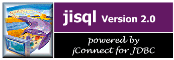

Witamy w programie jisql!
Program jisql umo¿liwia interakcyjn¹ pracê z serwerem bazy danych Sybase. Pe³ni on te same funkcje co isql, lecz zapewnia dodatkowe funkcje i graficzny interfejs u¿ytkownika.
W pomocy ekranowej programu jisql dostêpne s¹ nastêpuj¹ce tematy: